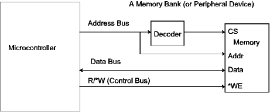
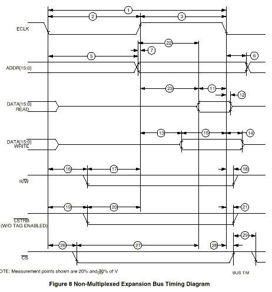

| Previous Section | Next Section | Index | Questions | Search the Text |
This section is split among several pages because of its length. The start of split sections have a table of contents showing each page and the contents of the current page. The current page is emphasized in bold.
In this section we will discuss interfacing memory and peripherals to a microcontroller. The interfacing techniques are identical for memory and peripherals in systems which have memory-mapped i/o, and they are similar (usually differing only in control lines) for systems which have i/o instructions (not Freescale!). We will only consider memory interfacing in this section, with the understanding that it can also apply to peripherals. When we look as a specific microcontroller, we will start with the 68HC812A4, which offers a simpler interface than the MC9S12DP256B we have been studying. Documentation for this microcontroller can be found here. The section Multiplexed Address and Data Busses will introduce the operation of the MC9S12DP256B memory interface.
In a read operation, data is transferred from the memory to the microcontroller and in a write operation data is transferred from the microcontroller to memory. An address bus with a width equal to the addressable locations of the system is driven by the microcontroller to the memory. A data bus with a width equal to the data path size of the microcontroller is used to transfer data between the microcontroller and memory. Several control lines are used to synchronize the operation and specify the direction and perhaps size (8 bits or 16 bits) of the transfer.

The figure above shows a simplified, "generic" interface between a microcontroller and a bank of memory. A memory bank occupies consecutive memory addresses (an address block), starting at a specific address, for the number of bytes contained in the memory device. If the device contains 64k bits, organized as 8k bytes (assuming here that the data bus is 8 bits, one byte wide), then 8192 memory locations will be assigned to the memory device. Since the address bus is typically 16 bits wide, with 64k addressable locations, the device will occupy an 8k block of addresses. The common way of assigning the bank's location is to have the first address be a multiple of the size of the bank. In this case, the starting address should be $0000, $2000, $4000, $6000, ... $E000. If the block started at, say, $4000, then the memory locations $4000-$5FFF would be assigned to the device. One can see that the upper three bits of the address select the block, while the lower 13 bits select the memory location within the block. An address decoder is used to select the memory bank (CS input) when the upper bits have the correct value for the bank.
Multiple banks of memory can exist, and can even be of different sizes, providing no two banks are selected at the same time. The busses are shared among the banks. It is important that only the selected bank drives the data bus when a read is requested and that no banks drive the bus when a write is requested. For this reason, even ROM memory banks must know if a read or write is requested, even though they cannot perform a write function, because they must only drive the bus on a read request from the bank.
A write request involves the following sequence of events. Various control signals, including clock signals, are used to synchronize the actions between the microcontroller and memory:
In some systems, the memory device can indicate that it has completed the requested operations. In others, such as the 68HC12, the memory device gets a specific amount of time to complete the request. The microcontroller can be configured to give more time for slow devices.
A read request involves the following sequence of events:
Again, in some systems the memory device can indicate that it has completed the request. In the 68HC12 and 68HCS12, the microcontroller can be configured to give more time for slow devices.
Let's look at the timing chart for the 68HC812A4, from the Freescale electrical specification:

For the moment, we are concerned with the ECLK, ADDR, DATA, and R/*W signals. ECLK is used to synchronize the operation, and is nominally a 125 nanosecond period. We can see that When ECLK goes high, the address is available, as is the R/*W signal. The falling edge of ECLK is used to latch the data either in the memory (on a write) or in the 68HC12 (on a read). Without stretching the clock, the timing is very tight between when the address is available and when the data must be available. This means the memory must have a very fast access time, or the ECLK period must be stretched. The ECLK can be stretched 1, 2, or 3 times an E clock cycle, or 125, 250, or 375 nanoseconds. In evaluation boards using this part, all accesses to external memory are stretched by this 125 nanoseconds. The clock stretching feature is part of the chip select feature discussed later in this section. At that point we will have an example of timing calculations.
Continue with Operation in Normal Expanded Narrow Mode.
Return to the Index.